STORE COLUMN GUIDE
스토어 칼럼 작성 가이드
스토어 칼럼(전문가 가이드)을 작성하고, 여러 언어로 번역·게시한 뒤 목록에서 관리하는 방법까지 순서대로 안내해 드릴게요. 백오피스가 처음이셔도 이 순서만 천천히 따라오시면 어렵지 않게 하실 수 있어요.
PART 01
칼럼 작성하기
원본(한글) 작성 → 번역 → 게시
PART 02
칼럼 관리하기
목록 보기 · 숨기기 · 삭제 · 재심사 · 안내 확인
PART 03
노출 언어 관리
지원 언어를 뺄 때 주의할 점
01
PART 01
칼럼 작성하기
새 스토어 칼럼을 작성해서 여러 언어로 게시하는 방법
1-1
작성 시작하기
1-1
[칼럼 등록] 버튼 누르기
스토어 칼럼 관리 화면
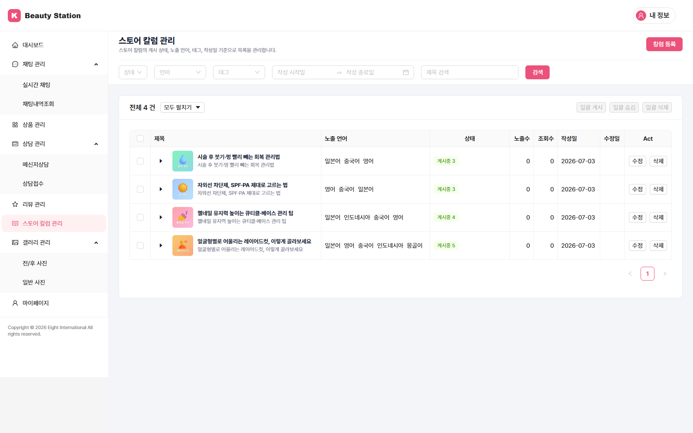
왼쪽 메뉴에서 스토어 칼럼 관리로 들어간 뒤, 오른쪽 위 [칼럼 등록] 버튼을 누르면 작성 화면이 열립니다.
- 메뉴 위치: 스토어 칼럼 관리
- 화면 오른쪽 위 [칼럼 등록] 버튼 클릭
💡 스토어 칼럼은 우리 스토어를 찾은 고객에게 전문가 가이드로 보여지는 글입니다. 시술·관리 정보처럼 고객이 궁금해할 내용을 담으면 좋습니다.
1-2
기본 정보 입력
1-2
제목 · 노출 언어 · 태그 정하기
작성 화면 상단
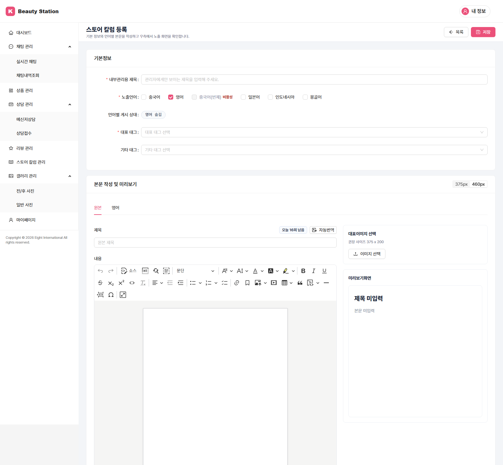
작성 화면 위쪽 기본 정보에서 글의 뼈대를 정합니다. 여기서 정한 노출 언어만큼 아래에 본문 탭이 생깁니다.
- 내부 관리용 제목우리끼리 글을 구분하려고 붙이는 제목입니다. 고객에게는 보이지 않습니다.
- 노출 언어이 글을 어떤 언어로 보여줄지 체크합니다. 체크한 언어마다 아래에 본문 작성 탭이 생깁니다. (한국어 원본은 번역용이라 고객에게 노출되지 않습니다.)
- 언어별 게시 관리언어마다 게시중 / 숨김을 켜고 끕니다. 특정 언어만 잠시 내리고 싶을 때 씁니다.
- 대표 태그 · 기타 태그글 주제를 나타내는 태그를 목록에서 선택합니다. 대표 태그는 카드에 먼저 보이는 한 개입니다. 태그는 직접 새로 만들 수 없고 제공되는 목록에서 고르며, 필요한 태그가 목록에 없으면 담당 매니저에게 말씀해 주세요 (확인 후 추가해 드립니다).
⚠️ 대표 이미지·노출 언어·대표 태그·내부 제목은 필수입니다. 비워두면 게시할 수 없습니다.
1-3
본문 작성 · 번역
1-3
한국어로 쓰고 자동번역하기
본문 작성 · 미리보기
먼저 원본(한국어) 탭에서 제목과 본문을 씁니다. 그런 다음 [자동번역]을 누르면 체크한 언어들로 한 번에 번역됩니다. 번역 결과는 각 언어 탭에서 직접 다듬을 수 있습니다.
- 원본 탭에서 제목·본문 작성 (텍스트와 이미지 사용 가능)
- [자동번역] 클릭 → 체크한 언어로 일괄 번역
- 언어 탭을 눌러 번역 결과 확인 후 어색한 부분 직접 수정
- 오른쪽 대표 이미지 업로드 (권장 비율 5:3)
- 오른쪽 미리보기로 고객 화면 확인
📌 자동번역은 하루 20회까지 쓸 수 있고, 버튼 옆에 남은 횟수가 표시됩니다. 다 쓰면 다음 날 다시 채워지며, 그 사이에도 각 언어 탭에서 손으로 고치는 건 계속 됩니다.
⚠️ 임시 저장 기능이 없습니다. 작성 중 페이지를 벗어나면 쓰던 내용이 사라지니, 번역 중·작성 중에는 창을 닫지 마세요.
1-4
게시하기
1-4
[게시] → 동의 → 완료
게시 2단계 확인
오른쪽 위 [게시]를 누르면 두 단계 확인을 거친 뒤 바로 고객에게 노출됩니다. 아래 두 창을 순서대로 만나게 됩니다.
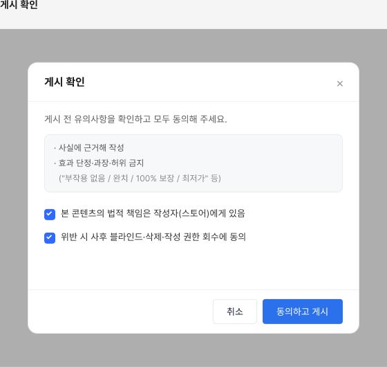
① 게시 확인 동의
유의사항을 안내하고, "이 글의 책임은 작성자 본인에게 있다"는 항목에 동의해야 다음으로 넘어갑니다. 전 항목 체크 후 게시됩니다.
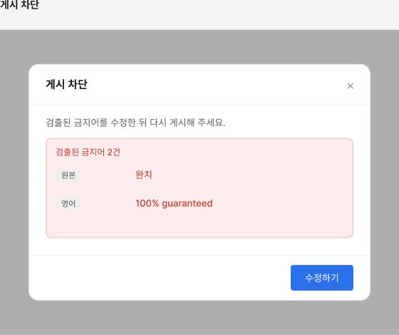
② 게시 차단 금지어 검사
본문에 사용할 수 없는 단어가 있으면 게시가 막히고, 어떤 단어가 걸렸는지 알려줍니다. [수정하기]로 돌아가 고친 뒤 다시 게시하면 됩니다.
💡 문제가 없으면 두 번째 창 없이 바로 게시됩니다. 게시된 글은 목록에서 언제든 다시 수정할 수 있습니다.
02
PART 02
칼럼 관리하기
올린 글을 확인하고 숨기거나 삭제·수정하는 방법
2-1
목록 화면 보기
2-1
글 상태와 성과 한눈에 보기
스토어 칼럼 관리 화면
작성한 글이 목록으로 보입니다. 글 왼쪽 ▸ 화살표를 누르면 언어별로 펼쳐져, 언어마다 상태와 성과를 따로 볼 수 있습니다.
- 필터: 상태 / 언어 / 태그 / 기간 + 제목 검색 후 [검색]
- 상태: 게시중 · 숨김 · 블라인드 · 재심사 (한 글에 언어별로 다를 수 있어 개수로 표시)
- 노출수 · 조회수: 글이 얼마나 보여지고 읽혔는지 성과 확인
- 관리: 행마다 [수정] · [삭제] 등
📌 ▸로 펼치면 언어별 행이 나옵니다. 게시·숨김은 언어 단위로, 삭제는 글 전체 단위로 동작합니다.
2-2
숨기기 · 다시 게시
2-2
잠깐 내리기 · 다시 올리기
일괄 게시 · 일괄 숨김
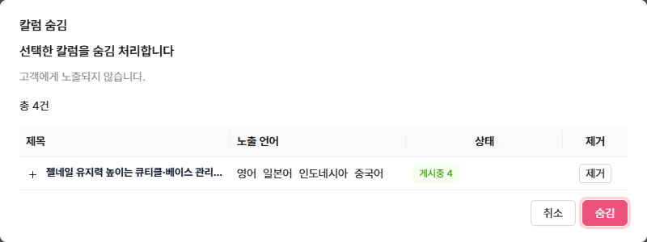
숨김은 글을 지우지 않고 고객 화면에서만 잠시 내리는 기능입니다. 언제든 다시 게시할 수 있고, 내용은 그대로 남습니다.
- 목록에서 원하는 글(또는 언어)을 체크
- 위쪽 [일괄 숨김] 또는 [일괄 게시] 클릭
- 펼쳐서 언어 하나만 골라 내리거나 올릴 수도 있음
💡 다시 게시할 때는 별도 확인 없이 바로 올라갑니다. 숨김은 사장님이 직접 되돌릴 수 있는, 되돌리기 쉬운 기능입니다.
2-3
삭제하기
2-3
글 영구 삭제
되돌릴 수 없음
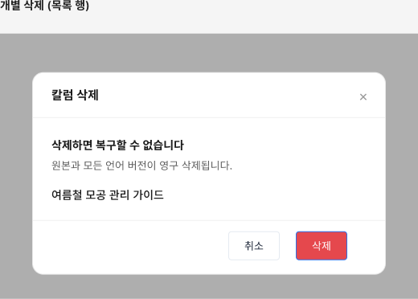
더 이상 필요 없는 글은 [삭제]로 지웁니다. 삭제하면 모든 언어 버전이 함께 영구 삭제되고 되돌릴 수 없으니, 잠깐 내릴 거면 삭제 대신 숨김을 쓰세요.
- 행의 [삭제] 클릭 → 확인 창에서 한 번 더 확인
- 여러 글을 체크해 [일괄 삭제]도 가능
⚠️ 삭제는 되돌릴 수 없습니다. 원본과 번역본 전부 사라집니다. 다시 쓸 가능성이 있으면 숨김을 권합니다.
2-4
블라인드 · 재심사 요청
2-4
블라인드된 글 다시 올리기
수정 → 재심사 요청
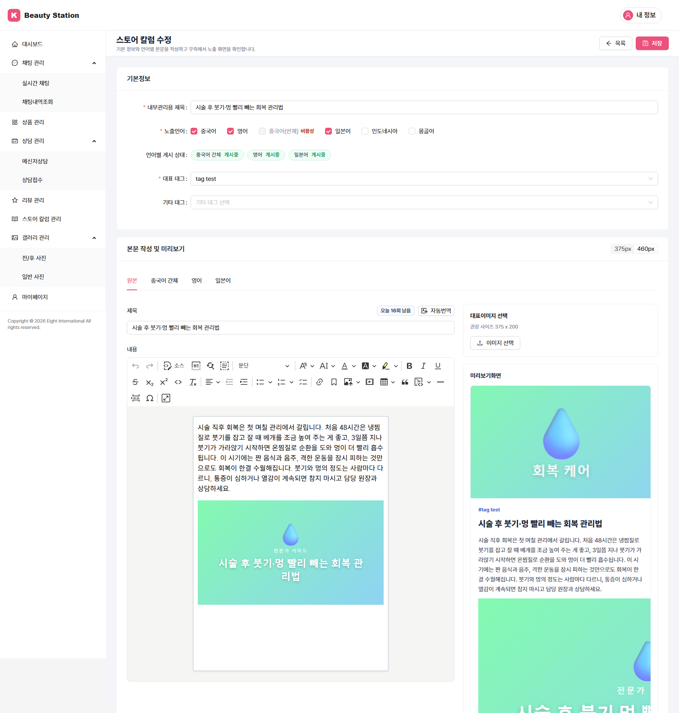
블라인드는 정책 문제로 운영팀이 글을 내린 상태입니다. 이건 사장님이 직접 다시 못 올리고, 내용을 고쳐서 재심사를 요청해야 합니다. 수정 화면 위에 내려간 이유가 안내됩니다.
- 블라인드된 글의 [수정] 진입 → 상단 안내에서 사유 확인
- 지적된 부분을 고침
- [재심사 요청] 클릭 → 운영팀 검토 요청
📌 재심사 요청 후 승인되면 직전 상태로 복원되고(블라인드 전이 게시중이면 게시중, 숨김이면 숨김), 반려되면 사유가 안내됩니다. 승인 전까지는 고객에게 보이지 않습니다.
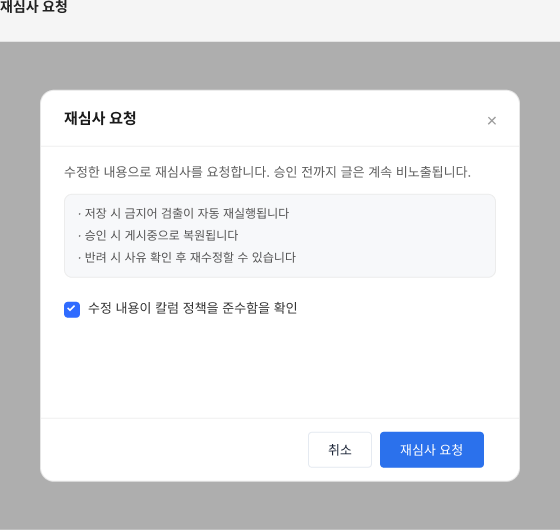
재심사 요청 제출
고친 내용을 운영팀에 검토 요청으로 제출합니다. 제출 시 금지어 검사가 다시 돌아갑니다.
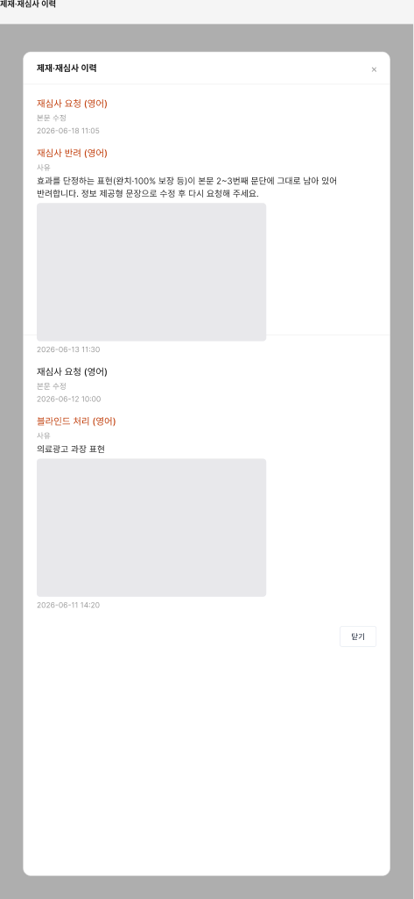
이력 보기 기록
언제·왜 내려갔고 어떻게 처리됐는지 최신순으로 확인합니다. 수정 화면 안내의 [이력 보기]로 엽니다.
2-5
정책 위반 안내 확인
2-5
안내가 오면 내용 확인하기
진입 시 1회 안내
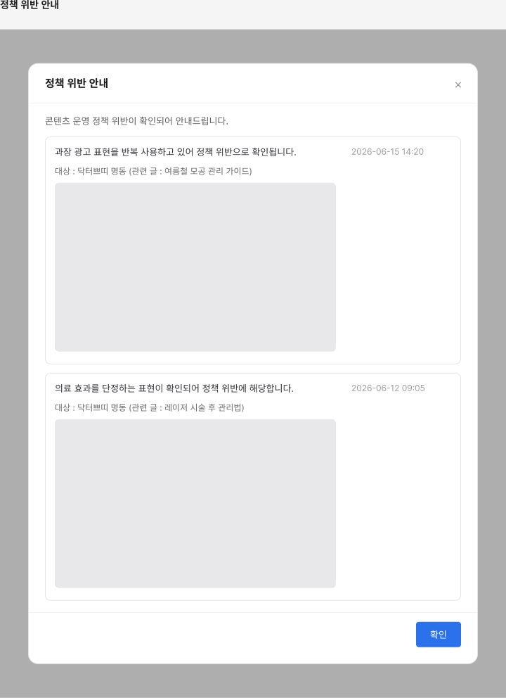
운영팀이 정책 관련 안내를 남기면, 칼럼 관리 화면에 노란 배너가 뜨고 처음 들어갈 때 안내 창이 한 번 나타납니다. 어떤 내용인지 확인해 주세요.
- 노란 배너의 [확인하기]로 안내 다시 열기
- 안내에는 사유 · 관련 글 · 일시가 담겨 있음
💡 궁금한 점이 있으면 담당 매니저에게 카카오톡으로 문의하시면 됩니다.
03
PART 03
노출 언어 관리
스토어 지원 언어를 바꿀 때 칼럼에 생기는 일
3-1
언어를 뺄 때 주의
3-1
지원 언어에서 언어를 빼면
마이페이지 기본정보 · 지원 언어
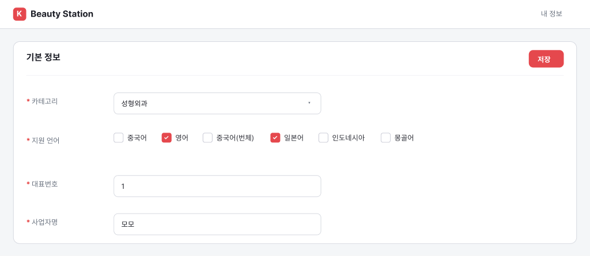
마이페이지 기본정보의 지원 언어에서 어떤 언어의 체크를 해제하면, 그 언어로 쓴 칼럼은 고객에게 보이지 않게 됩니다(비활성).
- 체크를 해제하면 그 언어 칼럼이 고객에게 비노출(비활성)되고, 작성한 내용은 그대로 보관됨
- 나중에 그 언어를 다시 추가하면 자동으로 다시 보여짐
📌 내용이 삭제되는 게 아니라 잠시 감춰지는 것입니다. 언어를 다시 켜면 원래대로 돌아옵니다.